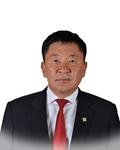

Member of the State Great Khural of Mongolia
Delgersaikhan Borkhuu
Member of the State Great Khural of Mongolia DELGERSAIKHAN Borkhuu
Mongolian People's Party
Education, graduated schools, education degree:
1972 - 1982 Secondary school #1, Dornogobi aimag
1983 - 1987 Military Institute /Law Enforcement Univercity/ Political analyst, Social science teacher
Working experience:
1987 - 1989 Investigator, Police Department of Dornogobi aimag
1989 - 1992 Senior investigator and Chief, Investigation Unit, Police Department of Dornogobi aimag
1993 - 2016 Founder and shareholder, “Dorniin Gobi” LLC
2004 - 2016 Founder and shareholder, “Boldtumur Eruu Gol” LLC
2005 - 2016 Founder and shareholder, “Montai Erdene” LLC
2007 - 2016 Shareholder, “Mongolian Trans Logistic” LLC
2011 - 2016 Founder and shareholder, “Dorniin Gobi Shand and” LLC
2016 Member of the State Great Hural (Parliament) of Mongolia
Foreign language knowledge:
Russian